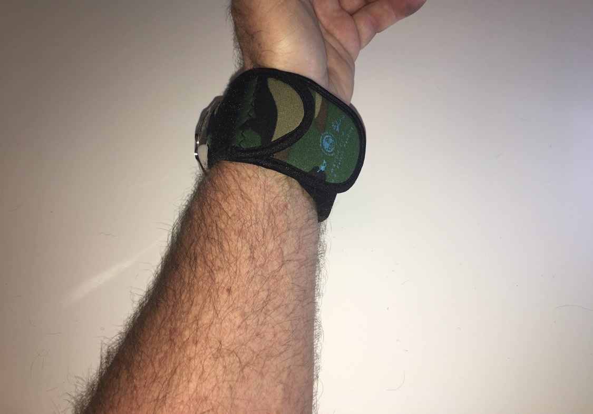

From the blog
Camo: Built to Blend In
November 10, 2026

Some gear is meant to stand out. Camo is not that gear. It is the quiet color in the WATCH-ET lineup, built for folks who would rather blend in than be seen, and who still want their watch guarded when the day gets rough.
Out in the woods
A watch face catches light. In a deer stand or a duck blind, that flash is the last thing you want. The Camo sleeve covers the face and the case, so your watch stays dark and quiet while you wait. Brush, branches, and bark scrape at everything on your wrist out there. Neoprene takes those hits so your watch does not have to.
At camp and on the water
Camp chores are hard on a watch. Splitting kindling, hauling water, setting up a tent, cleaning fish. Every one of those jobs puts your wrist against something rough. The sleeve guards the case and crystal through all of it, and the side pocket holds a little cash or a spare key so you are not digging through a pack. On the water, Camo fits right in with the rest of your gear, and it keeps sunscreen, fish slime, and dock rash off the watch.
On the job and in the field
Camo is not only for hunting season. Plenty of folks wear it every day because it matches their work clothes and their kit. If your day runs through a shop, a warehouse, a job site, or a patrol route, the sleeve keeps the watch covered through the knocks that come with the work. The flap closes over the face when you need it covered and opens fast when you need to check the time.
Low key, every day
Not everyone wants a bright watch cover. Camo keeps a low profile with jeans, work pants, and outdoor gear, and it looks right at home next to a knife, a flashlight, and the rest of your everyday carry. It is the color for folks who like their gear to do its job without drawing attention.
The WATCH-ET sleeve in Camo is the same tough neoprene as the rest of the lineup, with a flap that covers the face and a side pocket for small essentials. It fits watches up to 48mm in Medium and up to 53mm in Large, and it slides on and off in seconds.
Want the quiet one?
Medium $23 fits watches up to 48mm. Large $25 fits up to 53mm. Five colors.
Order Yours More Tips